第23章
一个州、两个州，
红色州、蓝色州
在美国，我们相信政府是民有、民治、民享的。所以，人们似乎从来没有在任何事情上达成一致，这让人感到遗憾。
即便是一个小家庭，在选择比萨配料上都很难达成共识。然而，美国这个吵吵嚷嚷、跨越了整个大陆的民主国家，却必须在更严重的问题上集体做出“是或否”的决定。是否要参战，选出这位或那位总统，是该监禁湖人队的球迷还是放任他们走在街上……我们是如何将3亿人的声音融合成单独一个国家合唱团的呢？
嗯，这需要一些技术活儿。人口普查、总计选票、制表、分配……这种量化的劳动，即使有点儿枯燥，也是至关重要的。这是因为，从本质上讲，代议制民主是一种数学行为。1
最简单的民主制度就是“少数服从多数”。这就产生了一个单一的临界点——50%。在临界点，一票就能让你反败为胜（反之亦然）。
但事实并不会这么简单。为了选出美国总统，我们精心设计了一个名为选举人团的机制，这是一个数学和政治上的古怪现象，在这一组合中引入了几十个临界点。除了助长我们无休止地谈论“红州”和“蓝州”外，它还赋予选举以迷人的数学性质。在这一章中，我将讲述的是选举人团故事中的那些转折点：
1. 最初，它选的是人。
2. 随后，它变成了数学。
3. 接下来，它在每一个州中，都变成了一个 “赢家通吃”的系统。
4. 此后，它就像一个“最受欢迎奖”的投票游戏，但也有一些有趣的惊喜。
最后，对选举人团制度的理解可以归结为一个边际分析问题。在这场所谓的“美国民主”选举中，在3亿人的投票中，一张选票意味着什么？
1. 像传话游戏一样的民主
1787年的那个夏天，55个戴假发的家伙每天在费城开会，为国家政府制定了一项新计划。今天，我们称他们制定的计划为“宪法”，它与奶酪牛排一起构成了我们民族性格的基础。
宪法中包含了一套确定“总统”（也就是“负责管理的人”）的详细制度。每四年，由选举人团任命一次总统，选举人团是“在特定的时刻，为了特定的目的，由选民选出的人”2。我认为这些选举人就是一次性的CEO遴选委员会。他们聚在一起只有一个目的——选出国家的新领导人，然后解散。
那么，选举人是从哪儿来的呢？嗯，来自各个州。每个国会议员都对应一名选举人，而在各个州的内部，他们可以用任何喜欢的方法来决定由谁来当这个选举人。
这个制度的逻辑是，当地公民通常只了解当地的政客。在信息不发达的时代，公民们怎么能仅仅通过演讲和发型，就对一个遥远而不知名的人做出判断呢？因此，在选举人团制度中，有三个步骤用于过滤人们的偏好：第一步，民众投票给当地的州议员；第二步，州议员投票选出选举人（或者用除了投票之外的选择方法），即国会议员；第三步，选举人投票决定总统。
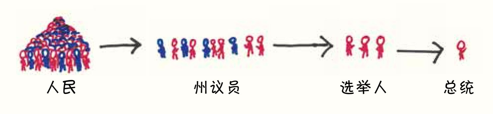
但是到了1832年，除了南卡罗来纳州以外，其他各州都将选举人的选举权交给了人民，直接让人民来决定选举人。
为什么会这样呢？
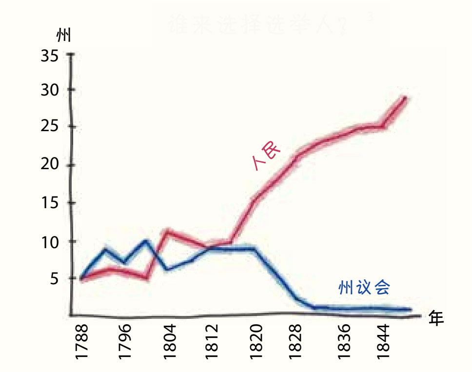
费城55人曾设想过一个开明的民主国家，政治家们有独立的意志，不受那些相互竞争的“政党”所左右。然而，他们走出去后，组建了看起来非常像政党的组织。
抛开虚伪不说，这样做也有好处。至少这样人们不需要研究每一个候选人的良心，只需要熟悉政党纲领，然后投票给你喜欢的政党就可以了，不需要中间人。
因此，这个国家从选择一个具体的人变成了选择一个政党，那个被选出来的政治家变成了“选举人票”，实际上代表的是数学的意义——他所支持的政党的票数。
当然，和宪法的许多内容一样，这个制度也为奴隶制带来了好处。4为什么这么说呢？回想一下，每个国会议员对应一个选举人，国会议员包括参议员（每个州两名）和众议员（根据人口比例有不同，在1804年，每个州的众议员人数为从1到22不等）。
在这个等式里，固定为两名的参议员部分为小州增加了一些力量，使罗得岛州（当时人口不足10万）可以和马萨诸塞州（当时人口超过40万）势均力敌。但真正的情节转折在众议院里展开了。在分配众议院成员时，费城55人就辩论过，选举人代表的人数是否应该包括奴隶。如果包括，那么拥有奴隶的南部地区将获得更多的选举人名额，否则，北部地区将从中受益。
经过折中后，他们将每5个奴隶登记为3个人，法制史上最不堪的比例诞生了：
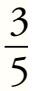
。就像从电子邮件附件下载病毒一样，选举人团将这一有利于奴隶制的妥协方案导入总统选举。以下是1800年的选举人数与假设不计奴隶的选举人数的对比：5
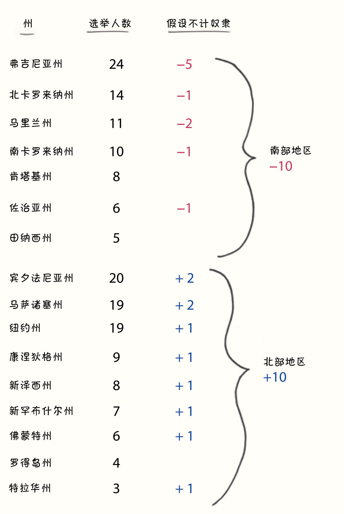
也许10个摇摆未定的选举人听起来并不算多。然而，在美国建国的最初36年中，有32年是由拥有奴隶的弗吉尼亚人领导的。唯一的例外是来自马萨诸塞州的约翰·亚当斯，但他在1800年以微弱的差距落败，没能连任。那个差距非常小，如果能再多10个选举人投他，他就能赢得大选了。
2. 为什么“赢者通吃”能赢而且通吃？
在1800年那场艰难的选举后，托马斯·杰斐逊在就职演说中发表了一份和解性的声明。他表示两党有着共同的原则、共同的梦想。他说：“我们都是联邦党人，我们都是共和党人。”
但看看今天的选举人团制度，你看到的不是一个阴阳平衡的美好国家，而是一张红蓝相间的地图。6加州属于民主党人，得州属于共和党人。没有“我们大家”，只有“我们”和“他们”，在玩一场赌注最高的双人棋盘游戏。
选举人团制度是如何发展成这样的呢？
这就是数学开始介入的地方。没错，我们让人民投好了票，但这些选票要如何汇总和制表？怎样的数学过程才能将原始的偏好转化为最终的选举人选择？
假设你在当今的明尼苏达州，必须把300万张选票浓缩成10个选举人。你会怎么做呢？
第一种选择：按实际选票的比例分配选举人。获得60%选票的党派可以得到6个选举人名额。7获得20%选票的党派得到2个候选人名额，以此类推。
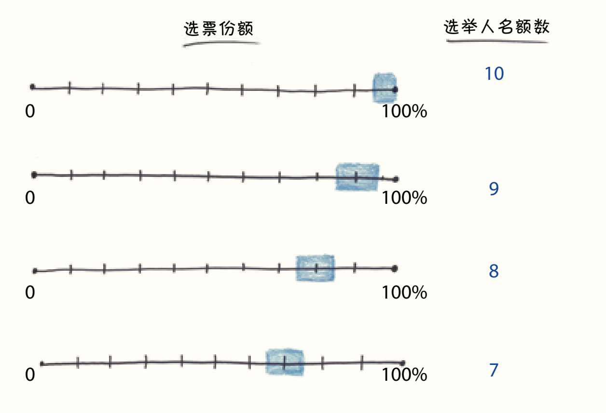
尽管合乎逻辑，但这一体系似乎没有任何吸引力。早些时候，各州尝试了一些奇怪的做法，比如田纳西州：由选民选举郡代表，由郡代表选举选举人，由选举人选举总统。但没有哪个州尝试过按比例分配。
第二种选择：按地域分配选举人。一个州有10个选举人名额，可以把整个州划分为10个区，每个区的获胜党派可以得到一个选举人名额。
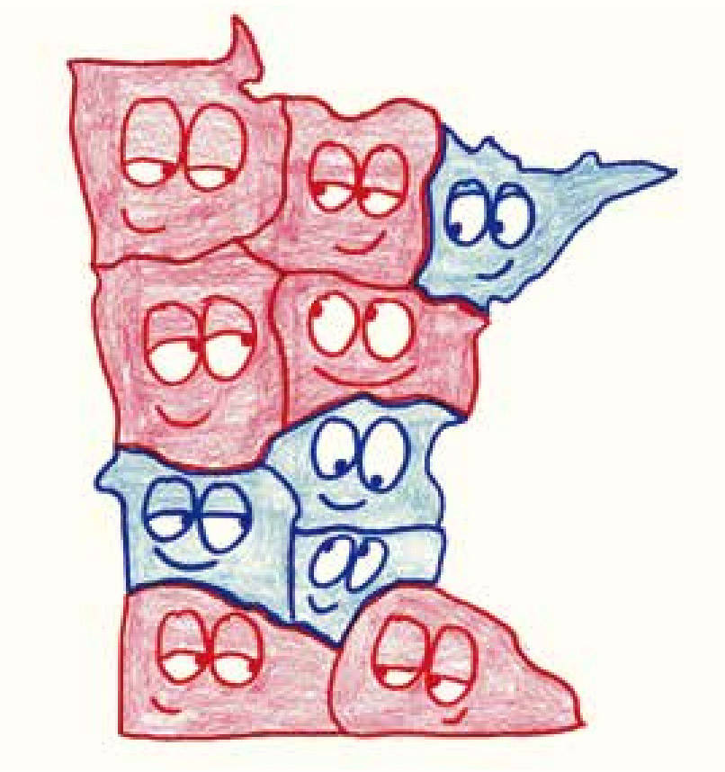
这种选举体系在18世纪90年代和19世纪初很常见，但现在已经不再用了。
目前仍存在的和这种选举体系很接近的一个版本是：先根据众议院选区选择选举人，然后，由于每个州的选举人总数都比其众议院议员数多两名，所以把最后两名选举人名额交给全州投票的获胜党。
如今，这个别致的选举制度只在两个州实行：内布拉斯加州和缅因州。其他地方也没有了。
那么其他48个州实行的是怎样的制度呢？他们采用一种激进的方式：赢者通吃。在这种方式下，全州的获胜党派将赢得所有选举人名额。
“赢者通吃”中暗含了一个重要信息：只要获胜就可以了，而优势的大小并不重要。2000年，乔治·W. 布什以不到600票的优势赢得了佛罗里达州，而在竞选连任时，他获胜的优势是40万票。但这对他来说，压倒性的优势并不比险胜时的优势“好”多少。赢者通吃将连续分布的百分比分解为两种离散的结果，这出乎费城55人的计划和料想之外。
那么，为什么96%的州都采取这种做法呢？
这个问题属于博弈论的范畴，即利用数学进行策略的选择。为了寻找答案，我们需要深入了解一个州级政客的想法。
我们从加利福尼亚州开始看。在这里，民主党控制着州议会，也倾向于获得更多的选票。假设你有两种选择：按比例分配，或者赢者通吃。
如果你是民主党人，选择赢者通吃会让你的政党更强大，否则就会把少数选举人票送给共和党人。所以，有什么可犹豫的呢？
在得克萨斯州，同样的逻辑也成立，只是两党的地位正好颠倒了。赢者通吃意味着可以将每位选举人都锁定为共和党人。那么，为什么要把宝贵的选举人票拱手相让呢？
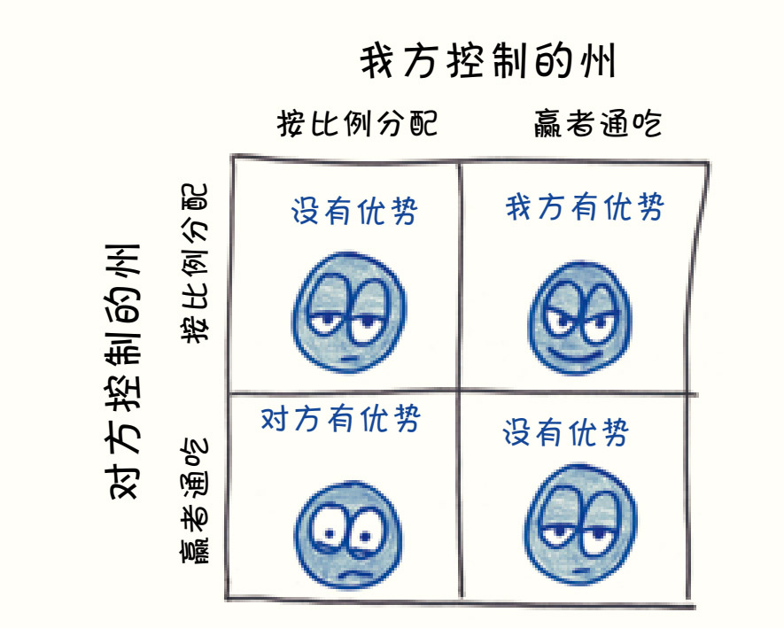
理论上，如果所有州的选举人名额都按选票比例分配，任何一方都不会受益。如左上角的格子那样，就像决斗的双方都放下了武器。
但这不是一个稳定的平衡状态。一旦你的对手放下武器，你会马上把武器拿起来。如果每个州都这样做，那么我们很快就会进入右下角的框中状态——当然，现在96%的美国人都在右下角的格子里。8
看完接下来这段关于选举人团制度的描述，你可能会认为州界很重要，就像两人的驾驶执照上写着同一个州就意味他们之间有一种特殊的亲密关系，但州议员可不会这么做。通过选择这种赢者通吃输者一无所有的体系，他们尽力提高了自己所在党派获胜的希望，即使这意味着可能将这个州边缘化。
举个例子，下面是得克萨斯州最近10次总统选举的结果：
采取赢者通吃的策略相当于在州的边界上张贴一个大标语：“无论我们的选民怎么想，我们永远支持共和党！”在赢者通吃的情况下，55%和85%一样好，45%也并不比15%好。赢者通吃意味着选举在开始前就结束了，所以两党都没有理由为了赢得选民的支持而调整自己的政策。为什么要把资源浪费在对结果没有影响的地方呢？
而反过来，如果按比例分配选举人，选举看起来是这样的：
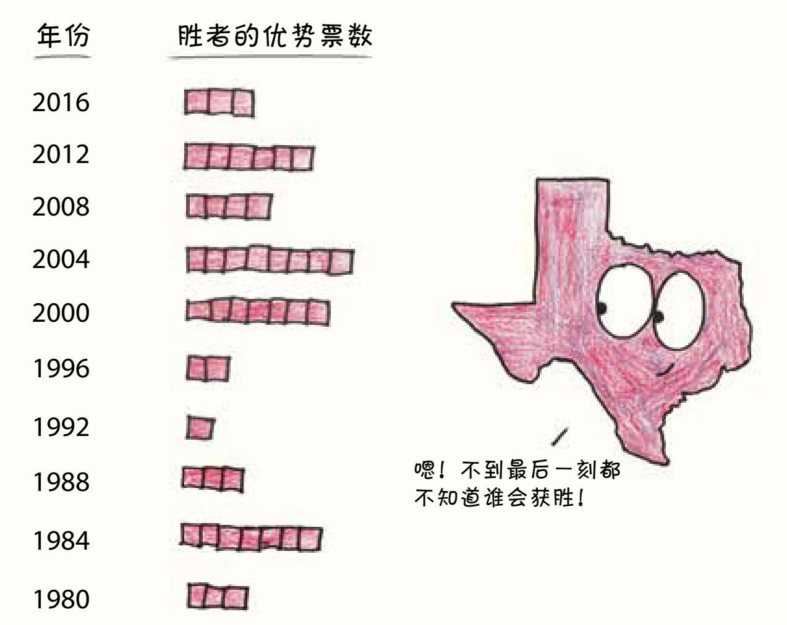
现在，选票的一点儿小波动都会对每个党的选举人名额产生切实的影响。如果得克萨斯州希望让所有选民都真正参与到这场博弈中来，那么选举人名额就应该按投票比例进行分配，因为这样每一张得克萨斯州的选票都会提高候选人获胜的概率。为了赢得选举人名额，候选人会进行竞选活动，尽力为自己拉票。
为什么这不是一件好事呢？因为“最大化我所在州的边际选票的影响”并不是立法者的动力所在。毕竟，他们首要的身份不是得克萨斯人，不是加利福尼亚人，不是堪萨斯人，也不是佛罗里达人，更不是佛蒙特人。
他们都是民主党人。他们都是共和党人。
3. 党派潮汐
一个多世纪以来，选举人团制度始终和全国普选同时存在，在过去的5次选举中，我们看到了两种分歧。2000年，民主党以0.5%的优势赢得了普选，而共和党以5票的优势赢得了选举人团。两边的边际优势都非常小。2016年，差距扩大了：民主党以2.1%的优势赢得了全国普选，而共和党以74票的优势赢得了选举人团。
你可能会问，选举人团制度现在是不是倾向于支持共和党呢？
内特·西尔弗是当代选举人团的统计预言家，他有回答这个问题的好方法。这个方法能够帮助我们确定选举人团的优势，而且不仅适用于2000年和2016年这样的特殊情况，还适用于任何选举。
这个程序（以2012年为例）是这样的：
1. 把这些州从“最红”依次排到“最蓝”。2012年，最红的是犹他州（共和党以48个百分点的优势领先），然后是怀俄明州、俄克拉何马州、爱达荷州……一直到佛蒙特州、夏威夷州，最后是华盛顿特区（民主党以84个百分点的优势领先）。
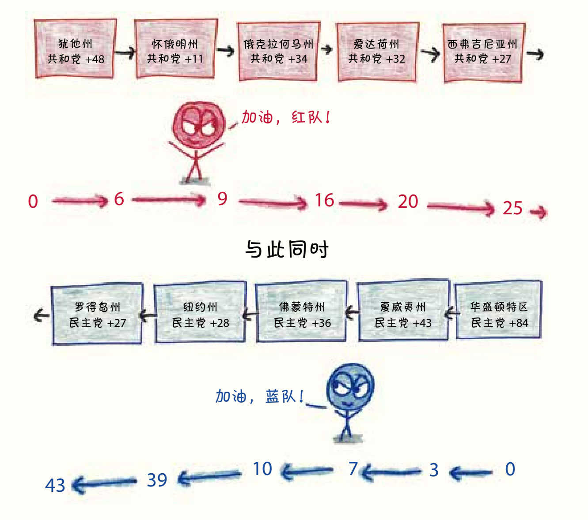
2. 找到位于序列中间的那个州，确定“临界点”的状态。正是这个州使获胜者迈过270票这一当选门槛。2012年，处在中间的是科罗拉多州，民主党在科罗拉多州以5.4个百分点的优势获胜。
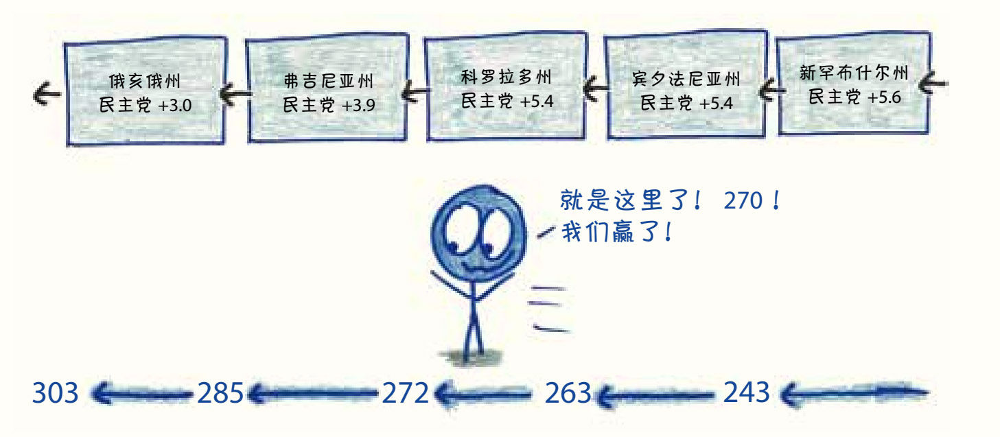
3. 逐步降低获胜者的得票比例，直到选举实际上打成平手为止。实际上，2012年民主党在全国范围内是轻松获胜的。但在理论上，即使民主党在全国范围内的得票都减去5.4%，只要能以一票之差赢得科罗拉多州，就能赢得全国大选。现在，让我们从每个州的总票数中减去5.4%，来模拟一场超级势均力敌的选举。
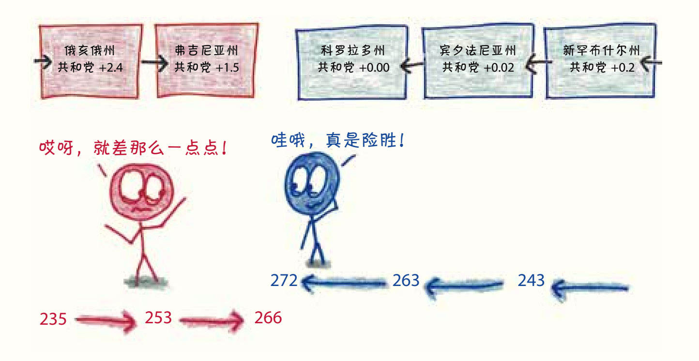
在选举人团制度中，获胜的一方有时享有它不需要的优势（例如2008年），有时又在对手具有优势的情况下成功反转（例如2004年）。然而，最令人好奇的，还是多年来选举结果是怎样上下波动的。
4. 从调整后的普选结果中，可以清楚地看出选举人团优势。
在选举人团制度中，获胜的一方有时享有它不需要的优势（例如2008年），有时又在对手具有优势的情况下成功反转（例如2004年）。然而，最令人好奇的，还是多年来选举结果是怎样上下波动的。
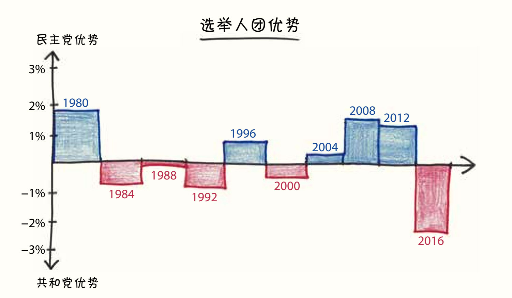
在过去的10次大选中，共和党和民主党各获胜5次。平均计算10次选举的结果可以发现，民主党以不足0.1%的微弱优势领先。西尔弗指出：“每次的选举结果几乎都与上次选举中的选举人团优势没有关联，它会根据选民中相对微妙的变化反复回弹。”9
从这个角度来看，2000年和2016年似乎真的是偶然。或许在另一个平行宇宙中，共和党人对巴拉克·奥巴马赢得两场选举而失去普选感到愤怒，而民主党人则为自己在选举中的不败而沾沾自喜。
那么，如何评价选举人团制度呢？
鉴于它的数学复杂性，选举人团制度多少可以看作一个随机数发生器。除了某些特殊情况，它通常与普选的结果一致。在11月的中期选举到来之前，我们都无法预测党派优势会向哪个方向倾斜。既然如此，我们应该抛弃这个制度吗？
我首先是个数学家，这就意味着我喜欢优雅和简单——这是选举人团制度并不具备的特点，但也喜欢古怪的统计场景——这是它所具备的。
我被一项名为“全国普选票州际协定”（National Popular Vote Interstate Compact）的提案逗乐了，或者，你觉得太拗口的话，也可以称之为“阿玛尔计划”（Amar Plan）10。这个简单的主意是由一对法学教授兄弟提出的：无论州内的选举情况如何，各州将自己的选举人的票投给全国普选的获胜者。到目前为止，这一协定已在10个州和华盛顿特区被写入法律，共有165名选举人。如果有足够多的州加入，超过270名选举人的门槛，他们将获得选举团的控制权（然而，在那天来临之前还是维持现状，因为直到加入的州到达临界值，这项法律才会生效）。
宪法允许各州按照自己的意愿分配选举人。如果他们想要普选，那也是他们的权利。在选举团制度的发展史上，这将是另一个全新的历史转折点。